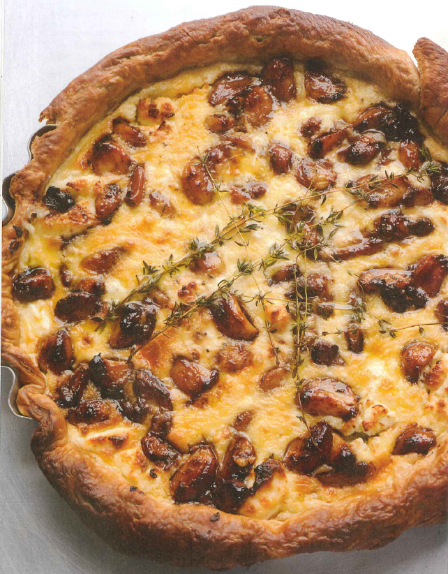

Caramelized garlic tart

'I think this is the most delicious recipe in the world!' wrote Claudine after trying it out for me. What else can I add?
Have ready a shallow, loose-bottomed, 28cm fluted tart tin. Roll out the puff pastry into a circle that will line the bottom and sides of the tin, plus a little extra. Line the tin with the pastry. Place a large circle of greaseproof paper on the bottom and fill up with baking beans. Leave to rest in the fridge for about 20 minutes.
Preheat the oven to 180°C/Gas Mark 4. Place the tart case in the oven and bake blind for 20 minutes. Remove the beans and paper, then bake for a further 5–10 minutes, or until the pastry is golden. Set aside. Leave the oven on.
While the tart case is baking, make the caramelized garlic. Put the cloves in a small saucepan and cover with plenty of water. Bring to a simmer and blanch for 3 minutes, then drain well. Dry the saucepan, return the cloves to it and add the olive oil. Fry the garlic cloves on a high heat for 2 minutes. Add the balsamic vinegar and water and bring to the boil, then simmer gently for 10 minutes. Add the sugar, rosemary, chopped thyme and ¼ teaspoon salt. Continue simmering on a medium flame for 10 minutes, or until most of the liquid has evaporated and the garlic cloves are coated in a dark caramel syrup. Set aside.
To assemble the tart, break both types of goat's cheese into pieces and scatter in the pastry case. Spoon the garlic cloves and syrup evenly over the cheese. In a jug whisk together the eggs, creams, ½ teaspoon salt and some black pepper. Pour this custard over the tart filling to fill the gaps, making sure that you can still see the garlic and cheese over the surface.
Reduce the oven temperature to 160°C/Gas Mark 3 and place the tart inside. Bake for 35–45 minutes, or until the tart filling has set and the top is golden brown. Remove from the oven and leave to cool a little. Then take out of tin, trim the pastry edge if needed, lay a few sprigs of thyme on top and serve warm (it reheats well!) with a crisp salad.